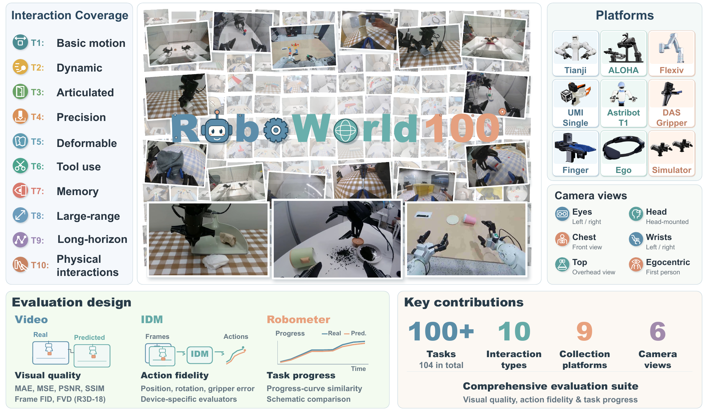
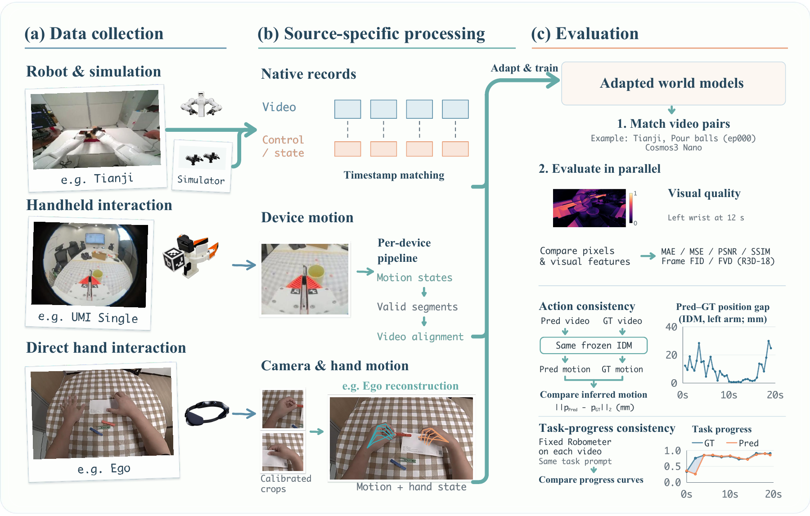

Diverse play
Human-guided exploration captures a broader range of physical interactions and action outcomes.
A Unified Framework for Learning and Evaluating Robot World Models from Diverse Play
World models need to predict what robot actions actually cause, including imperfect interactions. RoboWorld100 brings diverse play data, unified processing, and consequence-aware evaluation into one framework.

01 / The motivation
A generated video can look convincing while predicting the wrong result of an action. Play interactions expose contact, slips, misses, and recovery that success-focused demonstrations can overlook.
Human-guided exploration captures a broader range of physical interactions and action outcomes.
Source-specific processing aligns observations and motion into video–action sequences.
Matched predictions are assessed for visual quality, action consistency, and task progress.
Breadth by design
RoboWorld100 spans real and simulated environments, varied embodiments, and camera configurations. The task taxonomy guides collection toward distinct manipulation and physical challenges.
02 / The framework
A common pipeline turns heterogeneous recordings into world-model training examples, then compares generated videos with held-out real executions.

Record exploratory interactions across tasks and platforms.
Synchronize video and motion with platform-specific pipelines.
Compare predicted consequences with real trajectories.
03 / Evaluation
Visual fidelity alone does not tell us whether a model followed the action or preserved the task outcome.
Compare generated and real observations at the pixel and video-feature levels.
What does the future look like?Use platform-specific inverse dynamics models to assess the motion implied by video.
Did the model follow the action?Compare Robometer-estimated progress curves for predicted and real executions.
Did the task unfold the same way?Progress-curve similarity measures agreement between trajectories; it is not a task success rate.
04 / Resources
The manuscript, code, and data links will appear here when ready for release.